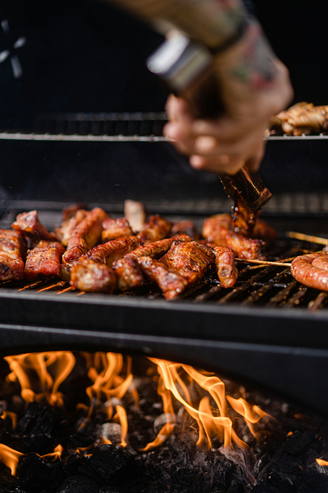

Grilled Chicken Thighs

Home
Description
Grilled Chicken Thighs are made ultra juicy with my powerful tenderizing marinade
ingredients. Flavourful with irresistible crispy bits.
Ingredients
For Honey Mustard sauce
- 1/2 cup dijon mustard
- 1/4 cup honey
For Mustard marinade
- 1/4 cup full-fat Greek yogurt
- 1/4 cup lemon juice
- 2 Tablespoons minced garlic
- 2 Tablespoons cooking oil (avocado or canola oil) -
don't use a low smoke-point oil like olive oil
- 2 1/2 Teaspoons kosher salt
- 1 Teaspoon paprika
- 1/4 Teaspoons ground cayenne
- 3 lbs bone-in, skin-on chicken thighs
Steps
Make a Honey Mustard sauce
- In a small bowl, whisk together 1/4 cup of the mustard and the honey.
Set aside. (Refrigerate it if you are doing a marinade longer than a couple
of hours.)
- Whisk remaining mustard with yogurt, lemon juice, garlic, oil, salt,paprika, and
cayenne in a large baking dish. Add the chicken thighs and turn to coat. Cover the
dish with plastic wrap and marinade chicken for 30 minutes at room temperature (or
up to 24 hours in the refrigerator- the flavour gets even better if you can do this!)
Either way, let the chicken stand at room temperature for 30 minutes just before cooking
for best results.
- Turn burners on a gas grill to medium heat and preheat the grill for 5-10 minutes with the
lid closed. Then, carefully oil the grates using long tongs and a paper-towel dabbed in oil.
Grill the Chicken Thighs
- Remove chicken from the marindae letting any excess drip off (then discard it). Grill chicken
skin-side down for about 7 minutes or until the pieces lift easily from the grates without
sticking or tearing.
- Turn off HALF of the burners and flip the chicken pieces over and onto the until side. Then
turn the side with *no chicken* on to high heat. (You're basically creating an oven to finish
cooking the chicken without burning it).
- Cover the grill and continue cooking the chicken until it reaches 165 degrees F internal temperature.
Brush with the Honey Mustard Sauce
- Brush the chicken pieces on both sides with the reserved honey mustard sauce and continue cooking over
indirect heat (unlit side) with cover closed for 5-10 minutes more, until the glaze is caramelized and
internal temperature reaches 175 degress F.
Rest the Chicken
- Let the chicken rest on a plate, uncovered, for 5-10 minutes before serving for juiciest results. The
cooking time with be 15-25 minutes in total.